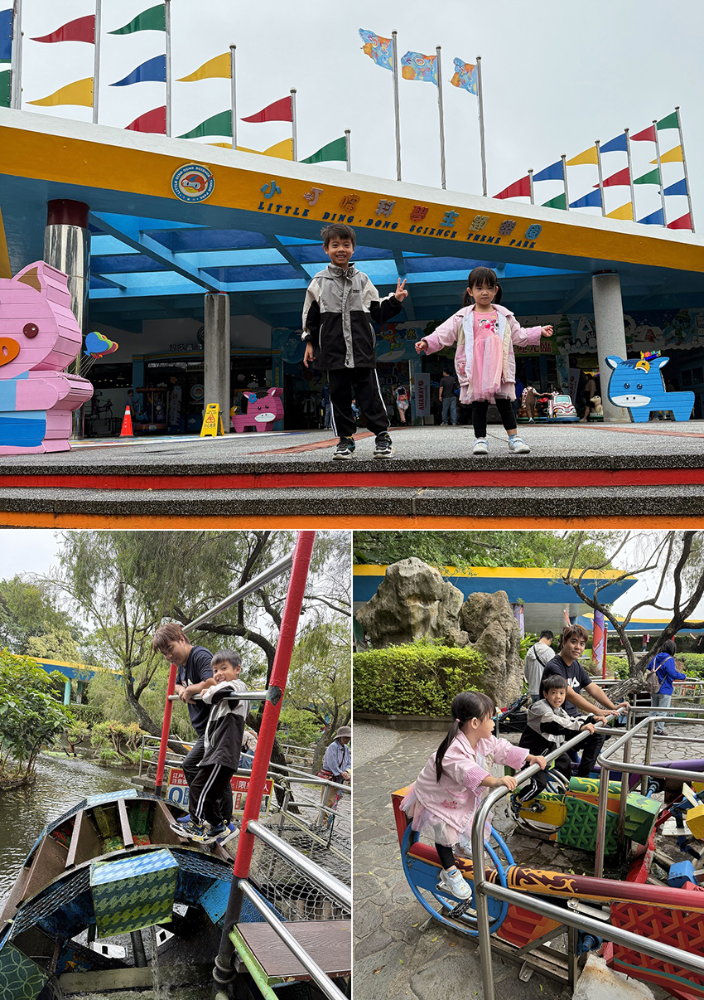
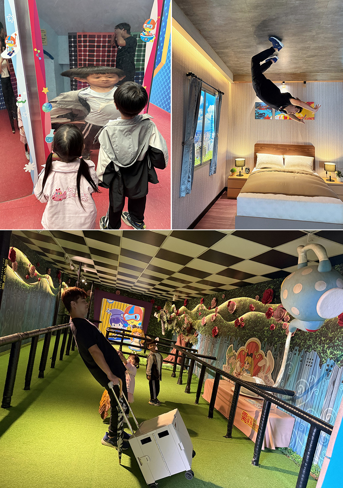
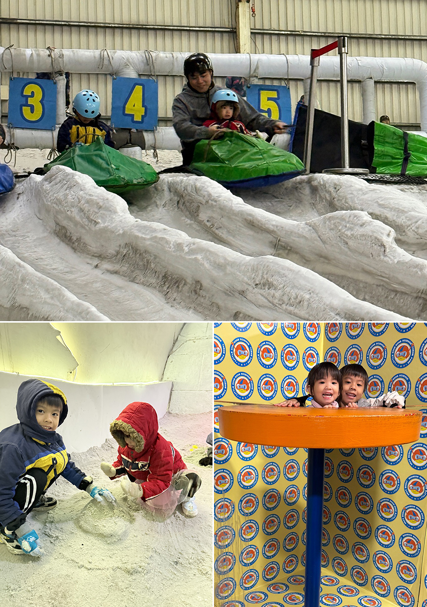

週末，我們一家來到新竹的小叮噹科學主題樂園，這是台灣少數以科學為主題的遊樂園，園區分為多個主題區域，每個區域都圍繞著不同的科學主題，將深奧的科學知識融入有趣的遊樂設施和互動體驗中，讓孩子在玩樂中學習科學原理，是一個寓教於樂的科學天地。
一進入園區，映入眼簾的是各式各樣的水力裝置，孩子們迫不及待地動手操作，觀察水流的變化，看著水流隨著裝置的運轉而改變，大家驚呼連連。最受歡迎的莫過於腳踩水車，兒子興奮地爬上水車，奮力踩動踏板，水車緩緩轉動，孩子們歡呼雀躍。這些互動性強的水力裝置，不僅讓我們玩得不亦樂乎，更讓我們在親身體驗中理解了水力的奧秘，感受到水資源的珍貴。
|  |
接著，我們來到「哈哈鏡區」，彷彿進入了一個充滿魔法的世界。這裡的每一面鏡子都像被施了魔法，將我們的身影扭曲成各種滑稽有趣的模樣，逗得大家哈哈大笑。孩子們興奮地在鏡子前擺出各種姿勢，看著自己變形扭曲的樣子，笑得前仰後合。這些看似簡單的哈哈鏡，其實蘊含著光學的奧秘，鏡面的凹凸不平使光線反射的角度發生變化，從而扭曲了我們的影像。透過這些有趣的鏡子，我們不僅收穫了歡樂，更對光的反射原理有了更直觀的理解。
離開哈哈鏡區，我們來到了「顛倒屋」。這是一座外觀看似普通，內部卻完全顛倒的房子。家具全都倒掛在天花板上，顛倒屋的設計巧妙地利用了視覺錯覺和空間錯位，讓人產生混淆，我們發揮創意，擺出各種搞笑動作，拍下新奇有趣的照片。
小叮噹裡最特別且讓我們印象最深刻的是「傾斜屋」，整個空間以特殊的角度傾斜著，讓人一踏入便感到一陣暈眩，身體不由自主地往一邊傾斜，彷彿有一股無形的力量在拉扯著我們。孩子們興奮地在屋內奔跑，卻總是東倒西歪，跌跌撞撞，笑聲和尖叫聲此起彼伏，這種打破常規的空間體驗，是一種特別的感官挑戰，讓我們感受到科學的神奇。
|  |
午餐時間，我們在園區內的餐廳享用了美味的餐點。孩子一邊吃，一邊興奮地分享上午的見聞。看著他們眉飛色舞的樣子，我深刻感受到親子共遊的珍貴。下午，我們來到小叮噹科學園區最有名的滑雪場，走進這座低溫零下三度的滑雪場，迎面而來的冷空氣讓我們忍不住縮了縮脖子。孩子們一看到滑雪道就興奮不已，套上安全帽，乘坐上雪毯，一溜煙地滑了下去，感受從高處俯衝而下的速度感，我們也忍不住玩了幾次。旁邊的親子戲雪區可以體驗玩雪及堆雪人的樂趣，孩子們玩得不亦樂乎。這裡全年都能體驗冰天雪地的樂趣，實在難得。
|  |
離開滑雪場後，我們來到隔壁的歡樂科學館，這裡不僅展示科學原理，更是一個讓孩子親自動手操作的遊樂場，孩子們在這裡玩到要關園才依依不捨地離開園區。這次的小叮噹科學園區之旅，不僅是一次親子共遊，更是一趟充滿教育意義的科學探索之旅。我們在玩樂中學習，在互動中增進感情。科學並不是枯燥乏味的公式和定理，而是充滿趣味和驚喜。看著孩子對科學產生濃厚興趣，我深感欣慰，這種寓教於樂的方式，值得我們借鑒和推廣。